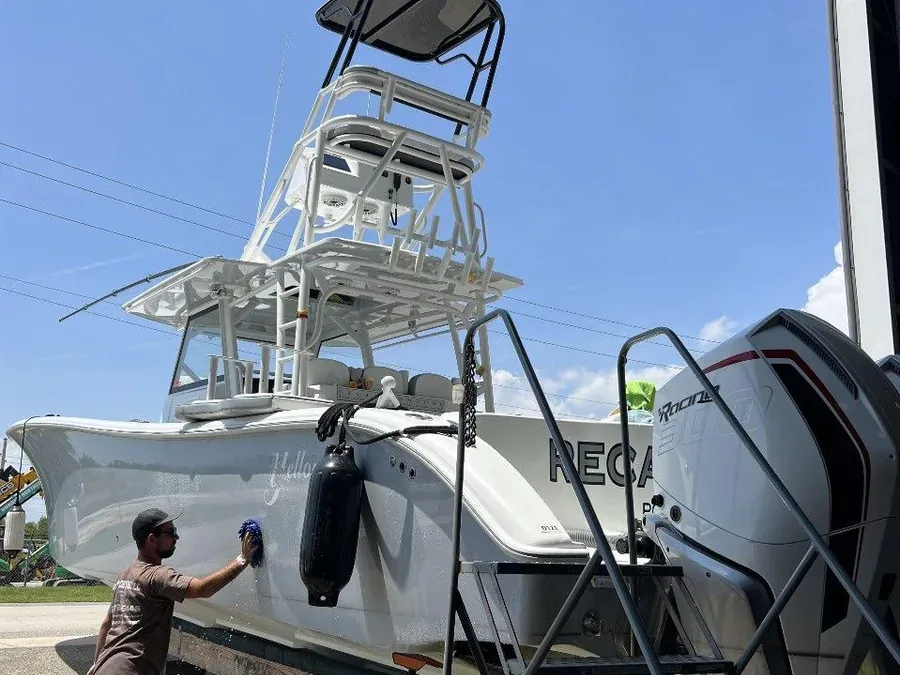
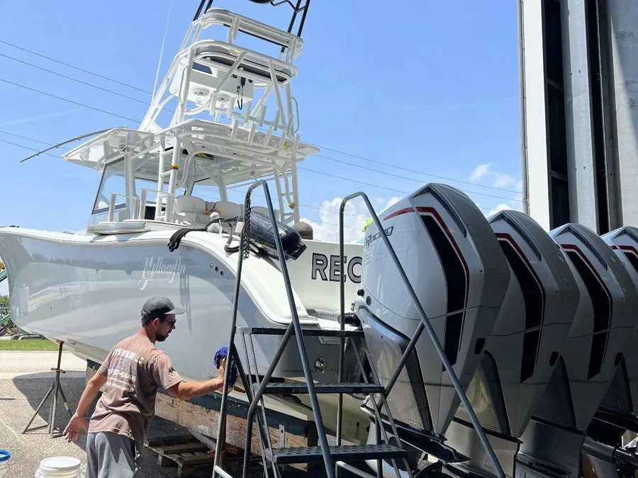
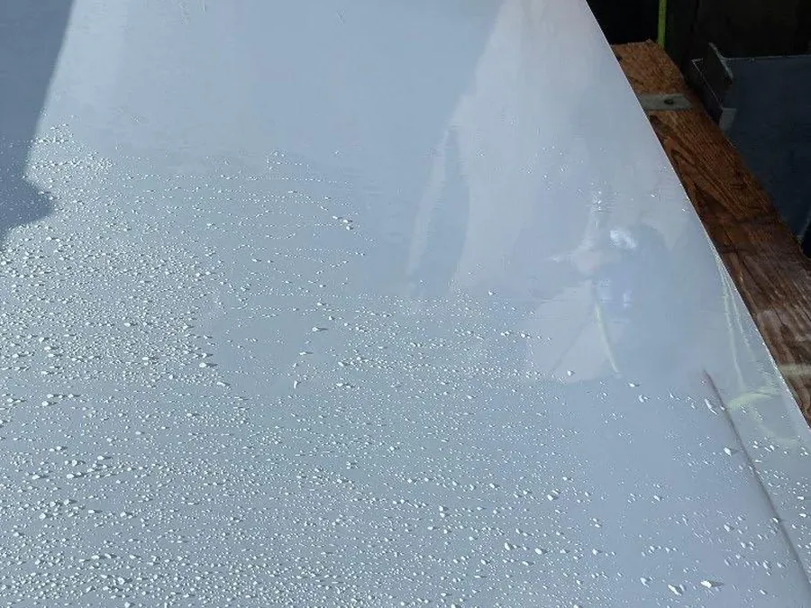

Industries / Marine
Safe chemistry for confined shipboard spaces.
Cruise, commercial vessels, docks, and offshore maintenance where fumes and corrosion spread quickly in tight spaces.
Where VertKleen fits in Marine.
Hull, aluminum, glass, and deck maintenance traditionally lean on hydrofluoric and hydrochloric acid brighteners and solvent washes, a serious problem in confined shipboard air. VertKleen Torque and AlumiBrite restore the same surfaces without those acids, and MultiWash supports drone and pressure-wash cleaning on occupied vessels.
See the proof
Recommended
VertKleen products for Marine.
Drop-in replacements for the hazardous chemistry this work usually relies on.
VertKleen on Marine sites.
Real jobs pulled straight from the VertKleen field library.



Get started
Take Marine to zero hazard.
Pick the path that fits. Every request routes to the MASEST team by vertical, product, and volume.